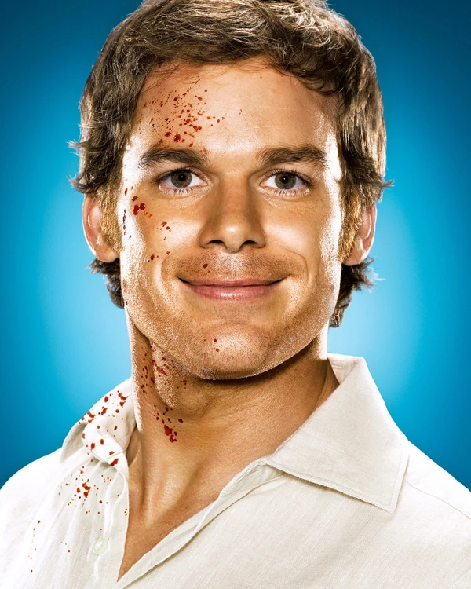
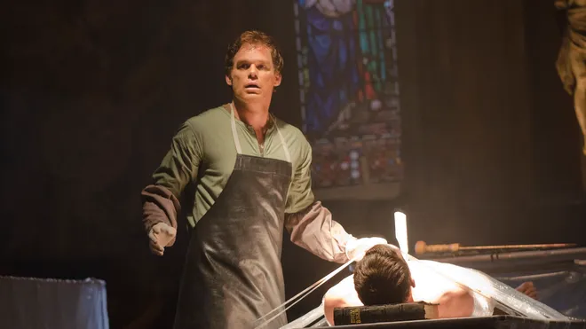
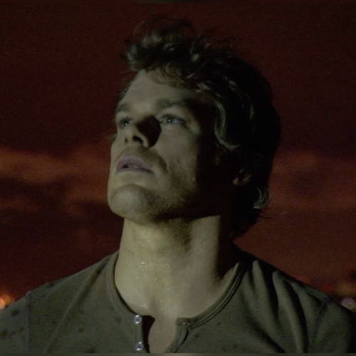
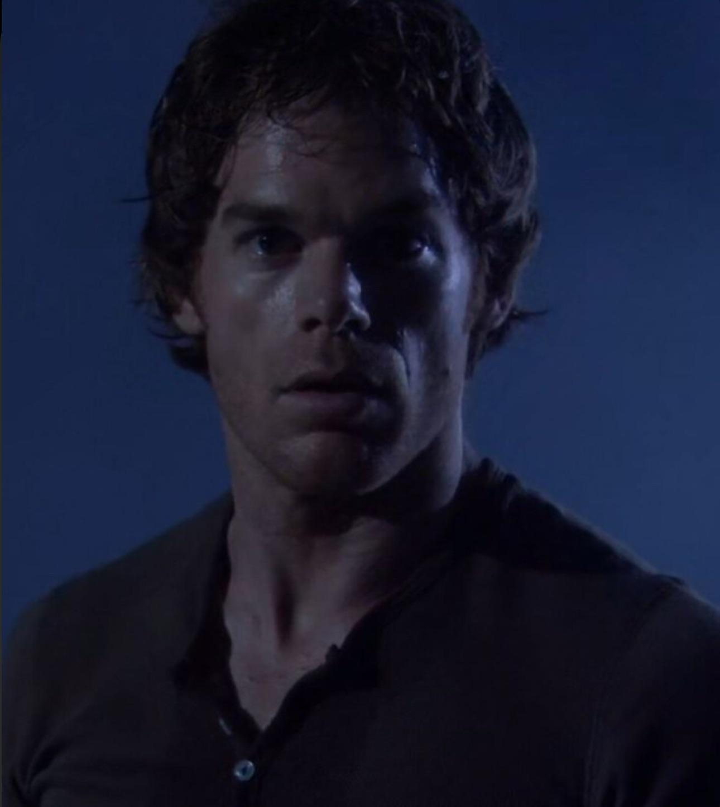
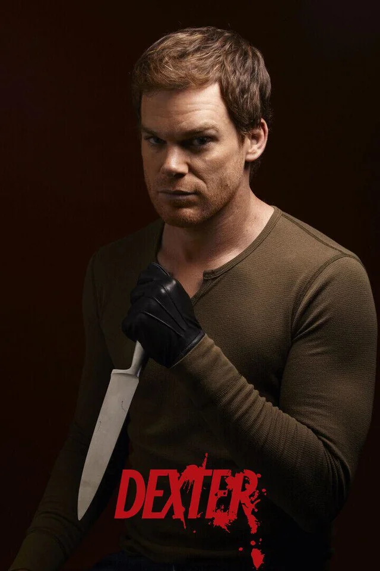
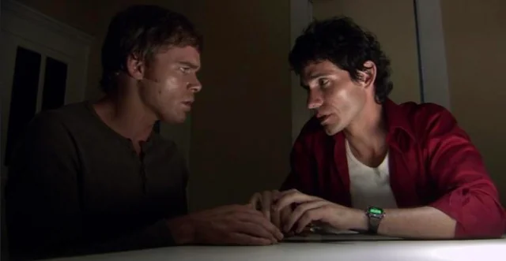

DEXTER MORGAN: THE BAY HARBOUR BUTCHER

Character Overview
- Full Name: Dexter Morgan
- Occupation: Blood-spatter analyst, Miami Metro Police
- Portrayed by: Michael C. Hall
Background
Dexter Morgan is a forensic blood-spatter analyst for the Miami Metro Police Department.
By day, he helps solve murders; by night, he leads a double life as a vigilante serial killer,
targeting criminals who have escaped justice. His trauma began as a child, after witnessing his mother’s brutal murder.
The Code of Harry
Dexter’s adoptive father, Harry Morgan, recognized his homicidal urges and taught him a moral framework
known as The Code:
- Only kill those who deserve it.
- Be certain of their guilt.
- Never get caught.
Personality & Traits
- Detached and analytical.
- Maintains a mask of normalcy in relationships.
- Struggles with human connection.
- Haunted by his Dark Passenger.
Key Relationships
- Debra Morgan: His adoptive sister, a detective.
- Harry Morgan: His late adoptive father and mentor.
- Rita Morgan: His first wife.
- Harrison Morgan: His biological son.
- Brian Moser: His biological brother.
Major Themes
- Duality: light vs. dark, man vs. monster.
- Justice and vigilantism.
- Identity and morality.
- Family bonds and tragedy.

Dexter killing Tarvis Marshall (The Doomsday Killer).

Dexter on his boat looking at the moon.

Dexter's confrontation with Sgt. Doakes.

Dexter poster for season 1.

Dexter with Brian Moser, his brother.